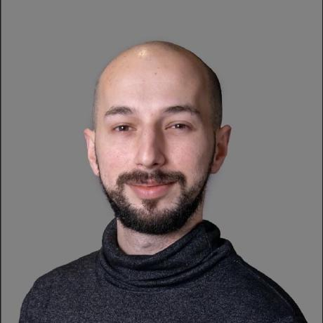

ID RMP-SP · SÃO PAULO / BRPython · Django/DRF · FastAPI · Flask · REST · OpenAPI/Swagger (drf-spectacular) · OAuth2/JWT · Keycloak
RabbitMQ · SQS/SNS · Celery · PostgreSQL · DynamoDB · MongoDB · Redis
AWS (Lambda · API Gateway · S3 · IAM · KMS · Secrets Manager · SES · CloudWatch) · Elasticsearch/Kibana · Terraform · Docker · CI/CD · GitHub Actions · Jenkins
React · TypeScript · Angular/NgRx · React Native